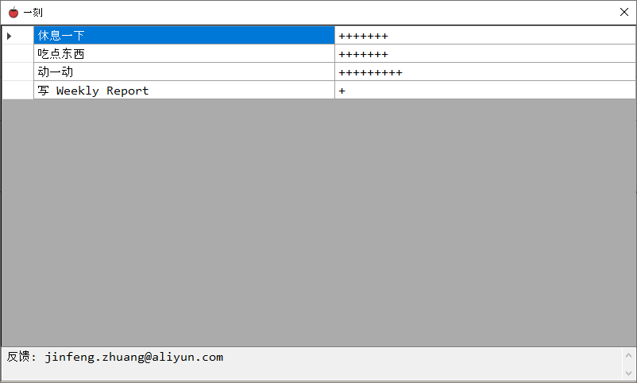
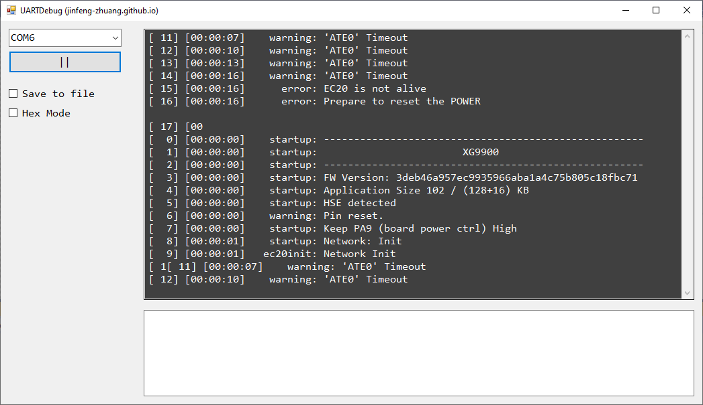
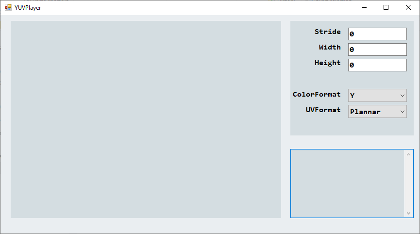

Jinfeng
之前做嵌入式开发，现在从事视频编解码工作。
欢迎邮件联系
一刻
一个番茄钟软件，以一刻钟为单位。每隔一刻钟，弹出来，用户选择要做的事情后，隐藏起来。会计数用户在某个事情上投入的时间片。 
串口调试工具
一个简单直接的串口调试工具，波特率是115200，有一个比特位，没有奇偶校验。 
YUVPlayer
双击屏幕选择 YUV 文件，输入分辨率后，敲回车，显示图像。
只显示 Y，如果以后自己需要其他的，再增加新功能
